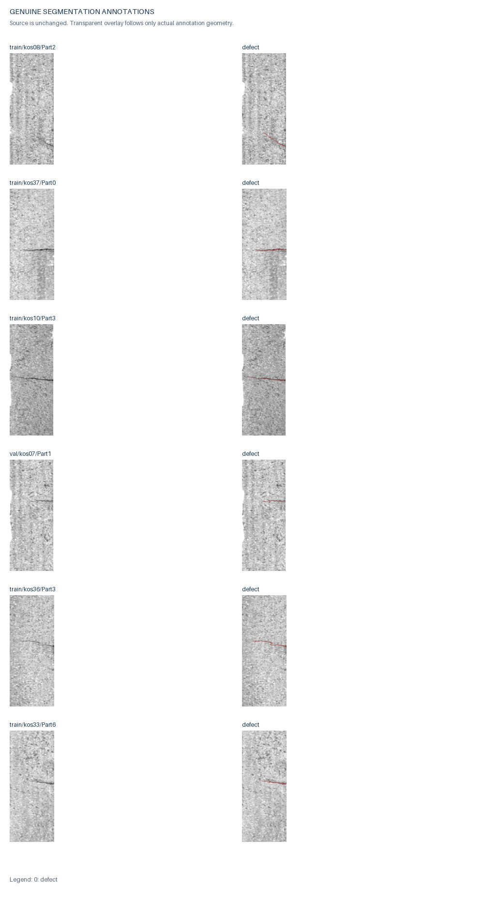
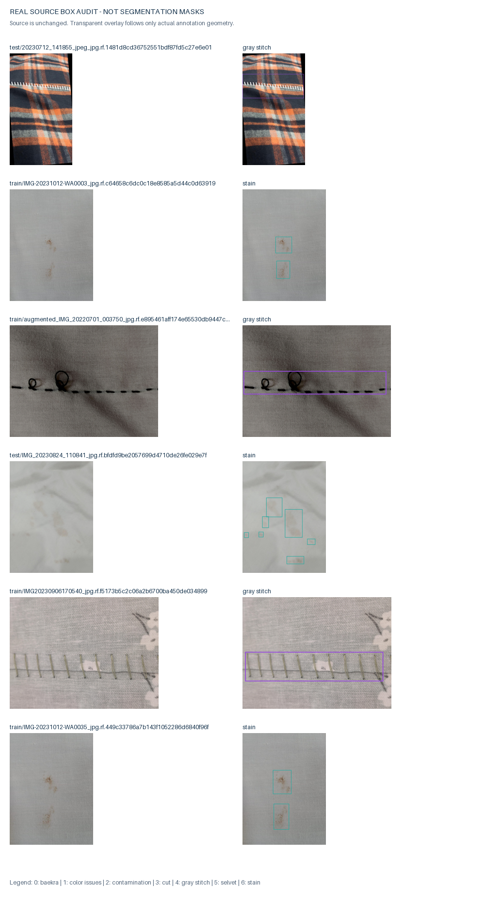

QCI-1 / Actual offline segmentation evidence
47 positive /319 negative.33 original quarantines; item groups stay together. Existing textile boxes audited separately.
QCI 74 passed /0 failed. Root 247 passed /2 prior CPU1 failures. Genuine-mask RSS drift 0.332%.
Local research/review complete. Commercial dataset use requires permission. GitHub PR pending restored access.
Actual pytest terminal output
Command: "C:\Users\ehtis\Desktop\Textile Defect Detection\ESE_CPU1_Quantization\runtime\venv\Scripts\python.exe" -X utf8 -m pytest tests/test_qci1_ingestion.py tests/test_qci1_additional_edges.py tests/test_qci1_decoder_isolation.py tests/test_qci1_acquisition.py -q --durations=5 ........................................................................ [ 97%] .. [100%] ============================= slowest 5 durations ============================= 0.50s call tests/test_qci1_ingestion.py::test_corrupted_image_does_not_abort_other_samples 0.49s call tests/test_qci1_ingestion.py::test_within_split_duplicate_images_are_quarantined 0.48s call tests/test_qci1_ingestion.py::test_unsplit_assignment_is_reproducible_and_grouped_by_content 0.45s call tests/test_qci1_ingestion.py::test_existing_splits_and_seed_are_preserved 0.34s call tests/test_qci1_ingestion.py::test_cross_split_reencoded_image_is_quarantined 74 passed in 8.39s Exit code: 0
Publisher fine segmentation annotations
Original image at left, actual defect mask overlay at right. These are not synthetic fixtures.

Original textile source box audit
Actual boxes; not segmentation masks.
